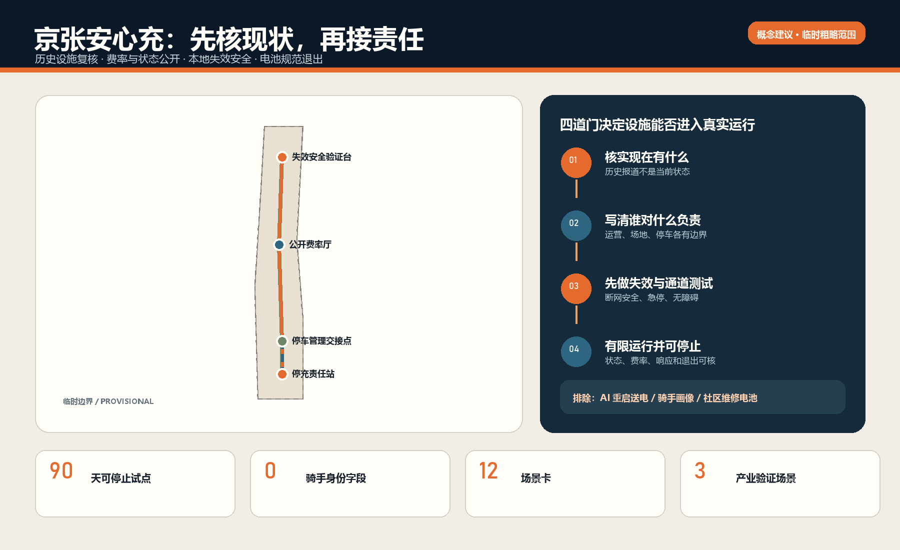
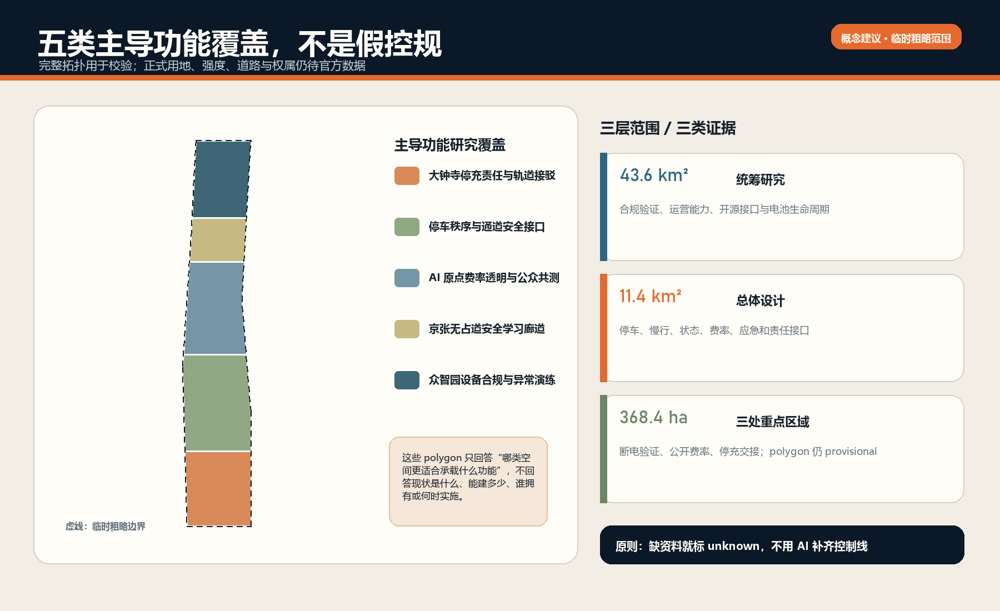
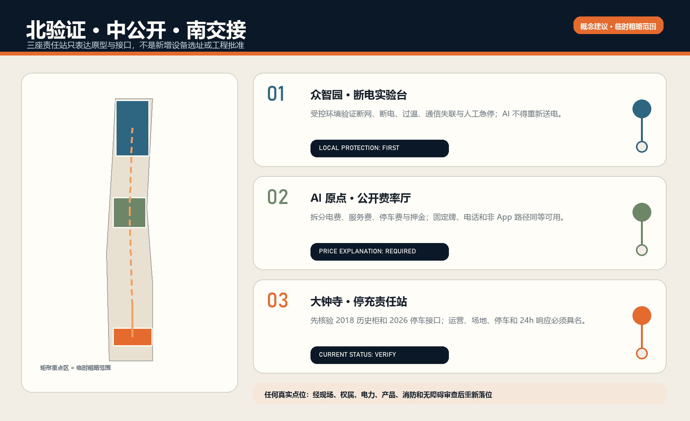
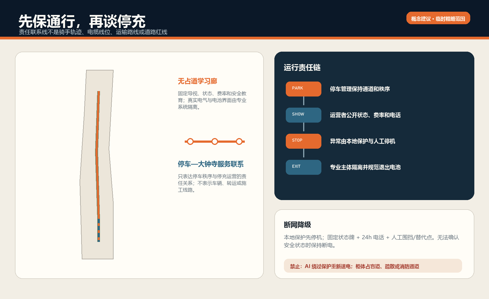
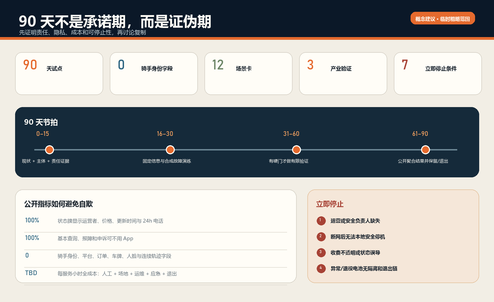

停充责任站
大钟寺先核历史设施与停车责任
安心充不是再画一批柜体，而是把停车、费率、状态、故障响应、本地停机和电池退出接成可核验的责任合同。个人使用和报障；专业企业负责产品与运行安全；政府、街道和社区协调公共空间并监督。
区位核验：上游 PROV-KEY-003 是未锚定大钟寺站的临时占位。Issue #1029 的公开复算报告其质心约距大钟寺站 2.26 km；本页不自行移动，也不把图上位置当真实站点、停车场或充换电设施。官方或 canonical 更新后整包重算。
不采集骑手身份、平台、订单、车牌、人脸或连续轨迹；AI 不控制充电电流、保护回路或重新送电。

大钟寺先核历史设施与停车责任
AI 原点公开价格、状态、电话和申诉
众智园在受控环境验证异常与本地停机
把场地通道责任与运营安全责任分开


现状真实 → 责任书面 → 专业合规 → 运行可停止。AI 只做冲突提示、聚合和工单辅助；本地保护与人工最终决定拥有最高权限。

0–15 天核现状与主体；16–30 天做固定信息和合成故障；31–60 天只有过硬门才有限验证；61–90 天公开聚合结果并保留、修改或退出。

五张图共同说明三层范围、重点区域、功能覆盖、通行与停车、蓝绿公共空间、建筑原型、更新项目及 AI 场景；所有面积和比例都来自临时粗略边界，仅用于一致性校验。
11,412,825.386 m²
5.1649% 概念学习廊道占比
0.4604% 概念节点占比
formal v2 双语包；13 章正文、五类图件、三层空间、12 张场景卡与 3 项产业验证互相引用。
确定性、专业证据、空间与视觉包装四闸均由仓库脚本校验；临时边界保留低置信度标记。
一手政府页面、开放项目仓库与许可证记录在 sources.json；展页不加载远程资源。
控规、权属、电力、产品、消防、无障碍与运营条件未获书面确认前，不得把概念点位当作实施承诺。
点位—运营者分离、状态与费率接口、位置故障路由、弱网走查和对象生命周期事件来自公开一手项目；北京规范决定本地责任边界，许可与用途限制记录在 sources.json。